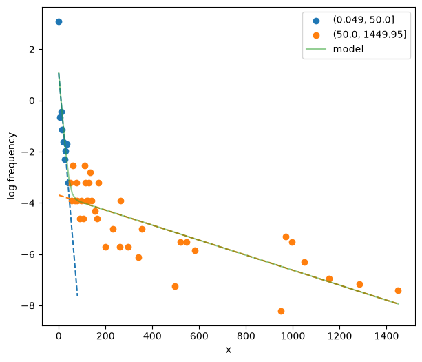
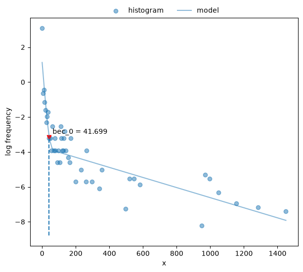
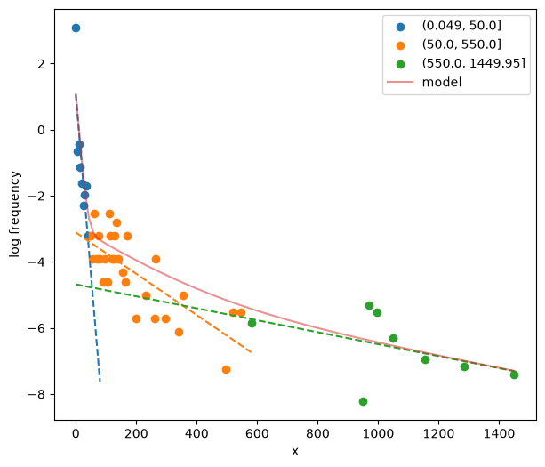
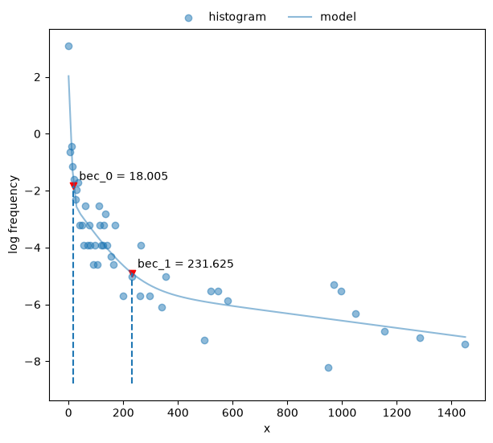
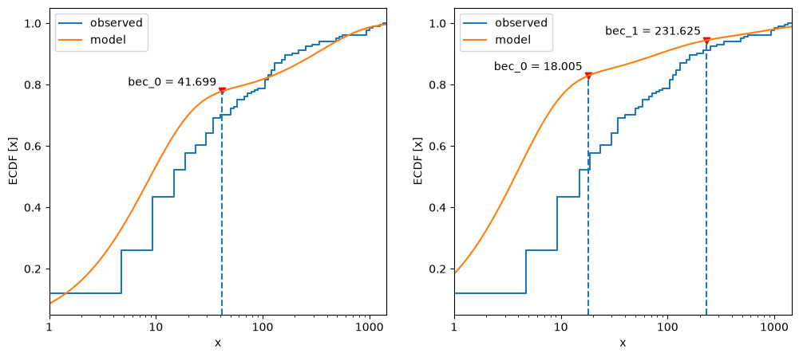
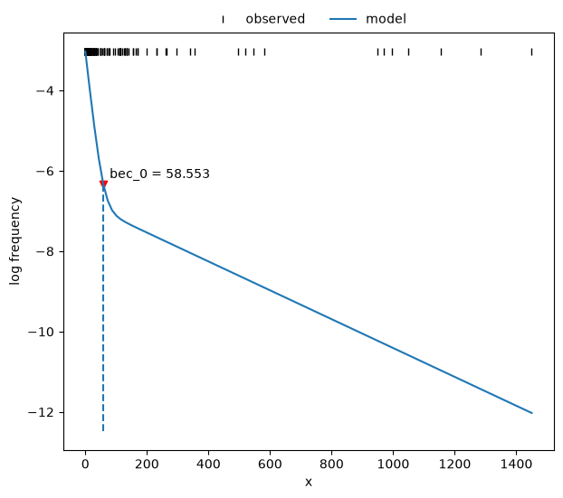
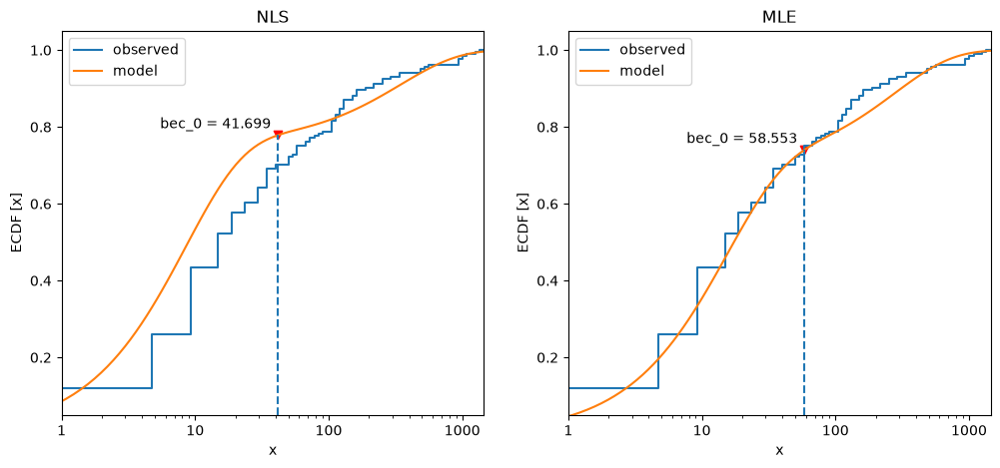

Bouts analysis#
Here is a brief demo on bout analysis with the bouts module for
data generated by mixtures of random Poisson processes.
Set up the environment. Consider loading the logging module and
setting up a logger to monitor progress to this section.
# Set up
import importlib.resources as rsrc
import pandas as pd
import matplotlib.pyplot as plt
from skdiveMove import calibrate
import skdiveMove.bouts as skbouts
# Declare figure sizes
_FIG1X1 = (7, 6)
_FIG1X2 = (12, 5)
_FIG3X1 = (11, 11)
Calculate postdive duration#
Create a TDR object to easily calculate the
necessary statistics:
1config_file = (rsrc.files("skdiveMove") / "config_examples" /
2 "ag_mk7_2002_022_config.json")
3tdr_file = (rsrc.files("skdiveMove") / "tests" /
4 "data" / "ag_mk7_2002_022.nc")
5tdrX = calibrate(tdr_file, config_file)
6stats = tdrX.dive_stats()
7stamps = tdrX.stamp_dives(ignore_z=True)
8stats_tab = pd.concat((stamps, stats), axis=1)
9stats_tab.info()
R callback write-console: Record is complete
7 phases detected
R callback write-console: 426 dives detected
<class 'pandas.DataFrame'>
Index: 426 entries, 1 to 426
Data columns (total 49 columns):
# Column Non-Null Count Dtype
--- ------ -------------- -----
0 phase_id 426 non-null int64
1 beg 426 non-null datetime64[ns]
2 end 426 non-null datetime64[ns]
3 begdesc 426 non-null datetime64[us]
4 enddesc 426 non-null datetime64[us]
5 begasc 426 non-null datetime64[us]
6 desctim 426 non-null float64
7 botttim 292 non-null float64
8 asctim 426 non-null float64
9 divetim 426 non-null float64
10 descdist 426 non-null float64
11 bottdist 292 non-null float64
12 ascdist 426 non-null float64
13 bottdep_mean 292 non-null float64
14 bottdep_median 292 non-null float64
15 bottdep_sd 292 non-null float64
16 maxdep 426 non-null float64
17 desc_tdist 201 non-null float64
18 desc_mean_speed 201 non-null float64
19 desc_angle 169 non-null float64
20 bott_tdist 292 non-null float64
21 bott_mean_speed 292 non-null float64
22 asc_tdist 158 non-null float64
23 asc_mean_speed 158 non-null float64
24 asc_angle 152 non-null float64
25 descD_mean 426 non-null float64
26 descD_std 426 non-null float64
27 descD_min 426 non-null float64
28 descD_25% 426 non-null float64
29 descD_50% 426 non-null float64
30 descD_75% 426 non-null float64
31 descD_max 426 non-null float64
32 bottD_mean 292 non-null float64
33 bottD_std 292 non-null float64
34 bottD_min 292 non-null float64
35 bottD_25% 292 non-null float64
36 bottD_50% 292 non-null float64
37 bottD_75% 292 non-null float64
38 bottD_max 292 non-null float64
39 ascD_mean 426 non-null float64
40 ascD_std 425 non-null float64
41 ascD_min 426 non-null float64
42 ascD_25% 426 non-null float64
43 ascD_50% 426 non-null float64
44 ascD_75% 426 non-null float64
45 ascD_max 426 non-null float64
46 postdive_dur 426 non-null timedelta64[ns]
47 postdive_tdist 420 non-null float64
48 postdive_mean_speed 420 non-null float64
dtypes: datetime64[ns](2), datetime64[us](3), float64(42), int64(1), timedelta64[ns](1)
memory usage: 166.4 KB
Extract postdive duration for further analysis.
1postdives = stats_tab["postdive_dur"][stats_tab["phase_id"] == 4]
2postdives_diff = (postdives.dt.total_seconds()
3 .diff().iloc[1:].abs())
4# Remove isolated dives
5postdives_diff = postdives_diff[postdives_diff < 2000]
Non-linear least squares via “broken-stick” model#
skdiveMove provides the bouts.BoutsNLS class for
fitting non-linear least squares (NLS) models to a modified histogram of a
given variable.
The first step is to generate a modified histogram of postdive duration, and this requires choosing the bin width for the histogram.
postdives_nlsbouts = skbouts.BoutsNLS(postdives_diff, 0.1)
print(postdives_nlsbouts)
Class BoutsNLS object
histogram method: standard
log-frequency histogram:
x lnfreq
count 46.000 46.000
mean 307.983 -4.079
std 383.530 2.119
min 0.050 -8.216
25% 62.550 -5.521
50% 132.550 -3.912
75% 351.300 -3.219
max 1449.950 3.091
Two-process model#
Assuming a 2-process model, calculate starting values, providing a guess at 50 s interdive interval.
fig, ax = plt.subplots(figsize=_FIG1X1)
init_pars2 = postdives_nlsbouts.init_pars([50], plot=True, ax=ax)

Fit the two-process model.
1coefs2, pcov2 = postdives_nlsbouts.fit(init_pars2)
2print("Coefficients:\n{}\n".format(coefs2))
3print("Covariance between parameters:\n{}\n".format(pcov2))
Coefficients:
(0.049, 50.0] (50.0, 1449.95]
a 25.756 8.307
lambda 0.119 0.003
Covariance between parameters:
[[+1.180e+02 +1.713e-01 +3.055e-01 +6.586e-05]
[+1.713e-01 +8.032e-04 +6.607e-03 +1.584e-06]
[+3.055e-01 +6.607e-03 +1.690e+00 +6.461e-05]
[+6.586e-05 +1.584e-06 +6.461e-05 +1.542e-07]]
Calculate bout-ending criterion.
# `bec` returns ndarray, and we have only one here
print("bec = {[0]:.2f}".format(postdives_nlsbouts.bec(coefs2)))
bec = 41.70
Plot the fit.
fig, ax = plt.subplots(figsize=_FIG1X1)
postdives_nlsbouts.plot_fit(coefs2, ax=ax);

Three-process model#
Attempt to discern three processes in the data.
fig, ax = plt.subplots(figsize=_FIG1X1)
init_pars3 = postdives_nlsbouts.init_pars([50, 550], plot=True, ax=ax)

Fit three-process model.
1coefs3, pcov3 = postdives_nlsbouts.fit(init_pars3)
2print("Coefficients:\n{}\n".format(coefs3))
3print("Covariance between parameters:\n{}\n".format(pcov3))
Coefficients:
(0.049, 50.0] (50.0, 550.0] (550.0, 1449.95]
a 29.812 7.094 3.913
lambda 0.254 0.014 0.001
Covariance between parameters:
[[+2.241e+02 +4.746e-01 -4.352e-01 -1.852e-03 -1.422e-01 -1.187e-04]
[+4.746e-01 +6.365e-03 +3.179e-02 +9.877e-05 +6.796e-03 +5.591e-06]
[-4.352e-01 +3.179e-02 +2.749e+00 +1.380e-03 -2.567e-01 -3.133e-04]
[-1.852e-03 +9.877e-05 +1.380e-03 +2.145e-05 +2.135e-03 +1.889e-06]
[-1.422e-01 +6.796e-03 -2.567e-01 +2.135e-03 +9.747e-01 +2.138e-04]
[-1.187e-04 +5.591e-06 -3.133e-04 +1.889e-06 +2.138e-04 +5.340e-07]]
Plot the fit.
fig, ax = plt.subplots(figsize=_FIG1X1)
postdives_nlsbouts.plot_fit(coefs3, ax=ax);

Compare the cumulative frequency distributions of two- vs three-process models.
1fig, axs = plt.subplots(1, 2, figsize=_FIG1X2)
2postdives_nlsbouts.plot_ecdf(coefs2, ax=axs[0])
3postdives_nlsbouts.plot_ecdf(coefs3, ax=axs[1]);

The three-process model does not follow the observed data as well as the two-process model.
Maximum likelihood estimation#
Another way to model Poisson mixtures that does not rely on the
subjectively created histogram, and involves fewer parameters, requires
fitting via maximum likelihood estimation (MLE). This approach is available
in bouts.BoutsMLE.
Set up an instance.
postdives_mlebouts = skbouts.BoutsMLE(postdives_diff, 0.1)
print(postdives_mlebouts)
Class BoutsMLE object
histogram method: standard
log-frequency histogram:
x lnfreq
count 46.000 46.000
mean 307.983 -4.079
std 383.530 2.119
min 0.050 -8.216
25% 62.550 -5.521
50% 132.550 -3.912
75% 351.300 -3.219
max 1449.950 3.091
Again, assuming a 2-process model, calculate starting values.
fig, ax = plt.subplots(figsize=_FIG1X1)
init_pars = postdives_mlebouts.init_pars([50], plot=True, ax=ax)
Fit the two-process model. It is important, but optional, to supply reasonable bounds to help the optimization algorithm. Otherwise, the algorithm may fail to converge. The fitting procedure is done in two steps: with and without a reparameterized log-likelihood function. Therefore, there are two sets of bounds required.
1p_bnd = (-2, None) # bounds for `p`
2lda1_bnd = (-5, None) # bounds for `lambda1`
3lda2_bnd = (-10, None) # bounds for `lambda2`
4bnd1 = (p_bnd, lda1_bnd, lda2_bnd)
5p_bnd = (1e-2, None)
6lda1_bnd = (1e-4, None)
7lda2_bnd = (1e-8, None)
8bnd2 = (p_bnd, lda1_bnd, lda2_bnd)
9fit1, fit2 = postdives_mlebouts.fit(init_pars,
10 fit1_opts=dict(method="L-BFGS-B",
11 bounds=bnd1),
12 fit2_opts=dict(method="L-BFGS-B",
13 bounds=bnd2))
1print("First fit:\n{}\n".format(fit1))
2print("Second fit:\n{}\n".format(fit2))
First fit:
message: CONVERGENCE: RELATIVE REDUCTION OF F <= FACTR*EPSMCH
success: True
status: 0
fun: 917.8524699061169
x: [ 8.264e-01 -2.690e+00 -5.629e+00]
nit: 7
jac: [-1.478e-04 -1.705e-04 0.000e+00]
nfev: 36
njev: 9
hess_inv: <3x3 LbfgsInvHessProduct with dtype=float64>
Second fit:
message: CONVERGENCE: RELATIVE REDUCTION OF F <= FACTR*EPSMCH
success: True
status: 0
fun: 917.8524699061167
x: [ 6.956e-01 6.791e-02 3.592e-03]
nit: 1
jac: [-7.049e-04 -2.342e-03 1.579e-02]
nfev: 28
njev: 7
hess_inv: <3x3 LbfgsInvHessProduct with dtype=float64>
Calculate bout-ending criterion (BEC).
print("bec = {:.2f}".format(postdives_mlebouts.bec(fit2)))
bec = 58.55
Plot the fit
fig, ax = plt.subplots(figsize=_FIG1X1)
postdives_mlebouts.plot_fit(fit2, ax=ax);

Compare the cumulative frequency distribution between NLS and MLE model estimates.
1fig, axs = plt.subplots(1, 2, figsize=_FIG1X2)
2postdives_nlsbouts.plot_ecdf(coefs2, ax=axs[0])
3axs[0].set_title("NLS")
4postdives_mlebouts.plot_ecdf(fit2, ax=axs[1])
5axs[1].set_title("MLE");

Label bouts based on BEC from the last MLE model. Note that
Timedelta type needs to be converted to total seconds to
allow comparison with BEC.
bec = postdives_mlebouts.bec(fit2)
skbouts.label_bouts(postdives.dt.total_seconds(), bec, as_diff=True)
236 1
237 2
238 3
239 4
240 4
..
422 51
423 51
424 51
425 52
426 52
Name: postdive_dur, Length: 191, dtype: int64